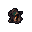
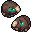
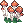
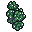

Lewati ke isi
Negeri Sunyi Wiki
Beranda
Zona
Monster
Item
Resep
Buff
Titik Bahan
Panduan
Beranda
Titik Bahan
Titik Bahan
Titik di dunia tempat bahan bisa dikumpulkan.
Hutan
Semak Beri
Beri Liar
Pohon Pendar
Kayu Pendar

Sisa Bara
Kayu Pendar, Batu Api

Urat Besi
Bijih Besi

Rumpun Jamur Merah
Jamur Merah

Kristal Angin
Batu Angin
Rawa
G
Ganggang Biru
Ganggang Biru
B
Bijih Rawa
Bijih Besi
T
Tanah Liat Pendar
Tanah Liat Pendar
A
Alang Rawa
Alang Rawa
K
Kristal Air
Batu Air
Gua Kristal
J
Jamur Biru
Jamur Biru
L
Lumut Gua
Lumut Gua
B
Bijih Kristal
Bijih Kristal
K
Kristal Tanah
Batu Tanah
Kawah Lava
C
Cabai Api
Cabai Api
K
Kristal Api
Batu Api
B
Batu Obsidian
Obsidian
B
Belerang
Belerang
Puncak Badai
S
Sarang Bulu
Bulu Badai
H
Herba Gunung
Herba Gunung
K
Kristal Petir
Batu Petir
B
Bijih Badai
Bijih Badai
Reruntuhan Cahaya
D
Debu Emas
Debu Emas
K
Kristal Cahaya
Batu Cahaya
A
Anggur Reruntuhan
Anggur Reruntuhan
B
Bunga Matahari Emas
Bunga Matahari Emas
Istana Hampa
L
Lempeng Aksara Hitam
Lempeng Aksara Hitam
K
Kristal Gelap
Batu Gelap
P
Pohon Buah Ilusi
Buah Ilusi
J
Jamur Kunang
Jamur Kunang